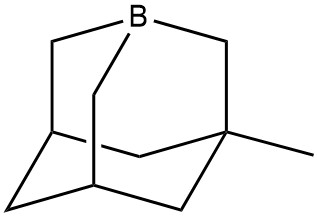
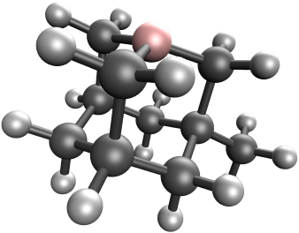

About This Project
Why We Are Doing This
During undergraduate and graduate-level organic chemistry courses, professors often depict 3D structures on a 2D paper/board/tablet. This often leaves students trying to visualize molecules in the 3D space of their imagination. Sometimes it works, sometimes it doesn't.
We aim to provide instructors with a supplemental tool to show students a 3D depiction of donor-acceptor interactions. This website offers a wide range of compounds, from simple molecules to ones that are harder to visualize and mentally rotate.


Readings
Alabugin, I.V. (2016). Introduction. In Stereoelectronic Effects, I.V. Alabugin (Ed.).
J. Chem. Educ. 2012, 89, 7, 854–859
Weinhold, F., Landis, C. R., & Glendening, E. D. (2016). What is NBO analysis and how is it useful? International Reviews in Physical Chemistry, 35(3), 399–440.
Our Paper Here